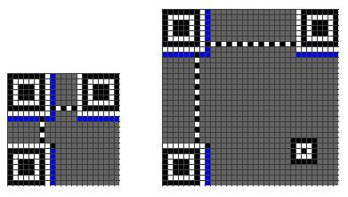

#二维码生成原理（即工作原理）
二维码官方叫版本 Version。Version 1 是 21 x 21 的矩阵，Version 2 是 25 x 25 的矩阵，Version 3 是 29 的尺寸，每增加一个 version，就会增加 4 的尺寸，公式是：(V-1)*4 + 21（V是版本号） 最高 Version 40，(40-1)*4+21 = 177，所以最高是 177 x 177 的正方形。
下面是一个二维码的样例：
1、定位图案
Position Detection Pattern 是定位图案，用于标记二维码的矩形大小。这三个定位图案有白边叫 Separators for Postion Detection Patterns。之所以三个而不是四个意思就是三个就可以标识一个矩形了。
Timing Patterns 也是用于定位的。原因是二维码有 40 种尺寸，尺寸过大了后需要有根标准线，不然扫描的时候可能会扫歪了。
Alignment Patterns 只有 Version 2 以上（包括 Version 2）的二维码需要这个东东，同样是为了定位用的。
2、功能性数据
Format Information 存在于所有的尺寸中，用于存放一些格式化数据的。
Version Information 在 >= Version 7 以上，需要预留两块 3 x 6 的区域存放一些版本信息。
数据码和纠错码
除了上述的那些地方，剩下的地方存放 Data Code 数据码 和 Error Correction Code 纠错码。
3、数据编码
QR 码支持如下的编码：
Numeric mode 数字编码，从 0 到 9。如果需要编码的数字的个数不是 3 的倍数，那么，最后剩下的 1 或 2 位数会被转成 4 或 7 bits，则其它的每 3 位数字会被编成 10，12，14 bits，编成多长还要看二维码的尺寸（下面有一个表 Table 1 说明了这点）
Alphanumeric mode 字符编码。包括 0-9，大写的 A-Z（没有小写），以及符号 $ % * + – . / : 包括空格。这些字符会映射成一个字符索引表。如下所示：（其中的 SP 是空格，Char 是字符，Value 是其索引值） 编码的过程是把字符两两分组，然后转成下表的45进制，然后转成11bits的二进制，如果最后有一个落单的，那就转成 6 bits 的二进制。而编码模式和 字符的个数需要根据不同的 Version 尺寸编成 9, 11 或 13 个二进制（如下表 Table 1）
Byte mode, 字节编码，可以是 0-255 的 ISO-8859-1 字符。有些二维码的扫描器可以自动检测是否是 UTF-8 的编码。
Kanji mode 这是日文编码，也是双字节编码。同样，也可以用于中文编码。日文和汉字的编码会减去一个 值。如：在 0X8140 to 0X9FFC 中的字符会减去 8140，在 0XE040 到 0XEBBF 中的字符要减去 0XC140，然后把前两位拿出来乘以 0XC0，然后再加上后两位，最 后转成 13 bit 的编码。如下图示例：
Extended Channel Interpretation (ECI) mode 主要用于特殊的字符集。并不是所有的扫描器都支持这种编码。
Structured Append mode 用于混合编码，也就是说，这个二维码中包含了多种编码格式。
FNC1 mode 这种编码方式主要是给一些特殊的工业或行业用的。比如 GS1 条形码之类的。
简单起见，后面三种不会在本文中讨论。
下面两张表中，
Table 2 是各个编码格式的“编号”，这个东西要写在 Format Information 中。注：中文是 1101
Table 3 表示了，不同版本（尺寸）的二维码，对于，数字，字符，字节和 Kanji 模式下，对于单个编码的2进制的位数。（在二维码的规格说明书中，有各种各样的编码规范表，后面还会提到）
示例一：数字编码
在 Version 1 的尺寸下，纠错级别为 H 的情况下，编码：01234567
把上述数字分成三组: 012 345 67
把他们转成二进制: 012 转成 0000001100； 345 转成 0101011001； 67 转成 1000011。
把这三个二进制串起来: 0000001100 0101011001 1000011
把数字的个数转成二进制 (version 1-H是10 bits ): 8个数字的二进制是 0000001000
把数字编码的标志0001和第4步的编码加到前面: 0001 0000001000 0000001100 0101011001 1000011
示例二：字符编码
在 Version 1 的尺寸下，纠错级别为 H 的情况下，编码: AC-42
-
从字符索引表中找到 AC-42 这五个字条的索引 (10,12,41,4,2)
-
两两分组: (10,12) (41,4) (2)
-
把每一组转成11bits的二进制:
(10,12) 10*45+12 等于 462 转成 00111001110
(41,4) 41*45+4 等于 1849 转成 11100111001
(2) 等于 2 转成 000010
-
把这些二进制连接起来：00111001110 11100111001 000010
-
把字符的个数转成二进制 (Version 1-H为9 bits ): 5个字符，5转成 000000101
-
在头上加上编码标识 0010 和第5步的个数编码: 0010 000000101 00111001110 11100111001 000010
结束符和补齐符
假如我们有个 HELLO WORLD 的字符串要编码，根据上面的示例二，我们可以得到下面的编码，
编码
字符数
HELLO WORLD的编码
0010 000001011 01100001011 01111000110 10001011100 10110111000 10011010100 001101
我们还要加上结束符：
编码
字符数
HELLO WORLD的编码
结束
0010 000001011 01100001011 01111000110 10001011100 10110111000 10011010100 001101 0000
按 8 bits 重排
如果所有的编码加起来不是8个倍数我们还要在后面加上足够的 0，比如上面一共有 78 个 bits，所以，我们还要加上 2 个 0，然后按 8 个 bits 分好组：
00100000 01011011 00001011 01111000 11010001 01110010 11011100 01001101 01000011 01000000
补齐码（Padding Bytes）
最后，如果如果还没有达到我们最大的bits数的限制，我们还要加一些补齐码（Padding Bytes），Padding Bytes就是重复下面的两个bytes：11101100 00010001 （这两个二进制转成十进制是236和17，我也不知道为什么，只知道Spec上是这么写的）关于每一个Version的每一种纠错级别的最大Bits限 制，可以参看QR Code Spec的第28页到32页的Table-7一表。
假设我们需要编码的是Version 1的Q纠错级，那么，其最大需要104个bits，而我们上面只有80个bits，所以，还需要24个bits，也就是需要3个Padding Bytes，我们就添加三个，于是得到下面的编码：
00100000 01011011 00001011 01111000 11010001 01110010 11011100 01001101 01000011 01000000 11101100 00010001 11101100
纠错码
上面我们说到了一些纠错级别，Error Correction Code Level，二维码中有四种级别的纠错，这就是为什么二维码有残缺还能扫出来，也就是为什么有人在二维码的中心位置加入图标。
错误修正容量
L水平 7%的字码可被修正
M水平 15%的字码可被修正
Q水平 25%的字码可被修正
H水平 30%的字码可被修正
那么，QR是怎么对数据码加上纠错码的？首先，我们需要对数据码进行分组，也就是分成不同的Block，然后对各个Block进行纠错编码，对于如何分组，我们可以查看QR Code Spec的第33页到44页的Table-13到Table-22的定义表。注意最后两列：
Number of Error Code Correction Blocks ：需要分多少个块。
Error Correction Code Per Blocks：每一个块中的code个数，所谓的code的个数，也就是有多少个8bits的字节。
举个例子：上述的Version 5 + Q纠错级：需要4个Blocks（2个Blocks为一组，共两组），头一组的两个Blocks中各15个bits数据 + 各 9个bits的纠错码（注：表中的codewords就是一个8bits的byte）（再注：最后一例中的（c, k, r ）的公式为：c = k + 2 * r，因为后脚注解释了：纠错码的容量小于纠错码的一半）
对每个块的纠错码
1 1 67 85 70 134 87 38 85 194 119 50 6 18 6 103 38 213 199 11 45 115 247 241 223 229 248 154 117 154 111 86 161 111 39
2 246 246 66 7 118 134 242 7 38 86 22 198 199 146 6 87 204 96 60 202 182 124 157 200 134 27 129 209 17 163 163 120 133
2 1 182 230 247 119 50 7 118 134 87 38 82 6 134 151 50 7 148 116 177 212 76 133 75 242 238 76 195 230 189 10 108 240 192 141
2 70 247 118 86 194 6 151 50 16 236 17 236 17 236 17 236 235 159 5 173 24 147 59 33 106 40 255 172 82 2 131 32 178 236
注：二维码的纠错码主要是通过Reed-Solomon error correction（里 德-所罗门纠错算法）来实现的。对于这个算法，对于我来说是相当的复杂，里面有很多的数学计算，最终编码。
穿插放置
二维码的混乱技术还没有玩完，它还要把数据码和纠错码的各个codewords交替放在一起。如何交替呢，规则如下：
对于数据码：把每个块的第一个codewords先拿出来按顺度排列好，然后再取第一块的第二个，如此类推。如：上述示例中的Data Codewords如下：
块 1 67 85 70 134 87 38 85 194 119 50 6 18 6 103 38
块 2 246 246 66 7 118 134 242 7 38 86 22 198 199 146 6
块 3 182 230 247 119 50 7 118 134 87 38 82 6 134 151 50 7
块 4 70 247 118 86 194 6 151 50 16 236 17 236 17 236 17 236
我们先取第一列的：67， 246， 182， 70
然后再取第二列的：67， 246， 182， 70， 85，246，230 ，247
如此类推：67， 246， 182， 70， 85，246，230 ，247 ……… ……… ，38，6，50，17，7，236
对于纠错码，也是一样：
块 1 213 199 11 45 115 247 241 223 229 248 154 117 154 111 86 161 111 39
块 2 87 204 96 60 202 182 124 157 200 134 27 129 209 17 163 163 120 133
块 3 148 116 177 212 76 133 75 242 238 76 195 230 189 10 108 240 192 141
块 4 235 159 5 173 24 147 59 33 106 40 255 172 82 2 131 32 178 236
和数据码取的一样，得到：213，87，148，235，199，204，116，159，…… …… 39，133，141，236
然后，再把这两组放在一起（纠错码放在数据码之后）得到：
67, 246, 182, 70, 85, 246, 230, 247, 70, 66, 247, 118, 134, 7, 119, 86, 87, 118, 50, 194, 38, 134, 7, 6, 85, 242, 118, 151, 194, 7, 134, 50, 119, 38, 87, 16, 50, 86, 38, 236, 6, 22, 82, 17, 18, 198, 6, 236, 6, 199, 134, 17, 103, 146, 151, 236, 38, 6, 50, 17, 7, 236, 213, 87, 148, 235, 199, 204, 116, 159, 11, 96, 177, 5, 45, 60, 212, 173, 115, 202, 76, 24, 247, 182, 133, 147, 241, 124, 75, 59, 223, 157, 242, 33, 229, 200, 238, 106, 248, 134, 76, 40, 154, 27, 195, 255, 117, 129, 230, 172, 154, 209, 189, 82, 111, 17, 10, 2, 86, 163, 108, 131, 161, 163, 240, 32, 111, 120, 192, 178, 39, 133, 141, 236
Remainder Bits
最后再加上Reminder Bits，对于某些Version的QR，上面的还不够长度，还要加上Remainder Bits，比如：上述的5Q版的二维码，还要加上7个bits，Remainder Bits加零就好了。关于哪些Version需要多少个Remainder bit，可以参看QR Code Spec的第15页的Table-1的定义表。
4、画二维码图
Position Detection Pattern
首先，先把Position Detection图案画在三个角上。
Alignment Pattern
然后，再把Alignment图案画上
关于Alignment的位置，可以查看QR Code Spec的第81页的Table-E.1的定义表（下表是不完全表格）
下图是根据上述表格中的Version8的一个例子（6，24，42）
Timing Pattern
接下来是Timing Pattern的线（这个不用多说了）
Format Information
再接下来是Formation Information，下图中的蓝色部分。

Format Information是一个15个bits的信息，每一个bit的位置如下图所示：（注意图中的Dark Module，那是永远出现的）

这 15 个 bits 中包括：
5 个数据bits：其中，2 个 bits 用于表示使用什么样的 Error Correction Level， 3 个 bits 表示使用什么样的 Mask
10 个纠错 bits。主要通过 BCH Code 来计算
然后 15 个 bits 还要与 101010000010010 做 XOR 操作。这样就保证不会因为我们选用了 00 的纠错级别，以及 000 的 Mask，从重造成全部为白色，这会增加我们的扫描器的图像识别的困难。
下面是一个示例：
关于 Error Correction Level 如下表所示：
关于 Mask 图案如后面的 Table 23 所示。
Version Information
再接下来是Version Information（版本 7 以后需要这个编码），下图中的蓝色部分。
Version Information一共是 18 个 bits，其中包括 6 个 bits 的版本号以及 12 个 bits 的纠错码，下面是一个示例：
而其填充位置如下：
数据和数据纠错码
然后是填接我们的最终编码，最终编码的填充方式如下：从左下角开始沿着红线填我们的各个 bits，1 是黑色，0 是白色。如果遇到了上面的非数据区，则绕开或跳过。
5、掩码图案
这样下来，图就填好了，但是，也许那些点并不均衡，所以还要做 Masking 操作 QR 的 Spec 中说了，QR 有 8 个 Mask 可以使用，如下所示：其中，各个 mask 的公式在各个图下面。所谓 mask，说白了，就是和上面生成的图做 XOR 操作。Mask 只会和数据区进行 XOR，不会影响功能区。
其 Mask 的标识码如下所示：（其中的 i,j 分别对应于上图的 x,y）
Mask 过后的二维码就成最终的图了。
（以上内容来源于网络）
#二、 编码实现
首先，我们需要下载 Google 的 ZXing 库。
下载地址：https://github.com/zxing/zxing
根据内容创建二维码
|
|
如果有 logo 则将 logo 插入到二维码中
|
|
解码过程
|
|
测试结果
源码地址：https://github.com/Wheliosc/ZXing-QRCode
开发环境：idea 2018.2